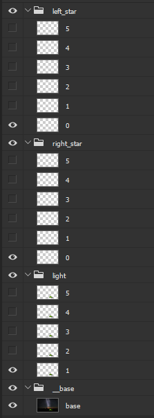

This project combines my love of animation with my love of code. I was inspired to create this after seeing the fantastic work being done in the field of automatic image coloring and shading. I felt that there was a lack of tooling available for artists to be able to quickly create animations based on a photoshop document, without having to learn an entire graphical animation program, which have significant learning curves.
AutoAnim takes two seperate inputs from the user: A .psd photoshop document, and an animation script.
The photoshop document defines what properties can be animated, and what the various options for that property are. Animatable properties are represented as a named folder, and options for that property as layers in that folder. For example, in the example tent animation, there are three distinct animatable properties: The left shooting start, the right shooting star, and the tent lighting.
any group or layer prefixed with __ (two underscores) will be ignored, which is useful for making a base layer that holds the majority of the image data.
The animation script runs in a modified python environment. The job of the script is to define a main() function that will be called by AutoAnim. All of the baseline API functions are made available in the global namespace. By far the most commonly used, and often only required, API functions are set_state(property, option), which is how you tell it which layer to display for a given property, and wait(ms), which instructs the animation sequence to wait the specified number of milliseconds before the next action is performed. wait() is smart, in that it knows the current context it is running in, and will only affect the current time in the 'thread' it is called in.
On the topic of 'threads', AutoAnim allows animation sequences to run independently of each other. This feature is analagous to having multiple keyframe channels in standard animation software, allowing you to have logically sperate actions actually be seperate. This is a critical feature, and was the most challenging aspect to implement. It should be noted that while it appears to mimic seperate threads, everything is implemented deterministicly in a single thread. All functions, except the entry point main(), are automatically wrapped by the Loopable class, which provides additional functionality, cheif among which is the ability to instead call a function 'foo' in a seperate channel, via foo.loop_background(num). num specifies the number of times to loop, or, if left out, it will loop until it is told to stop at a later time.
There is a notion of the 'primary' channel, and secondary background channels. All channels keep track of their position in time individually. Main() is called in the primary channel implicitly. Calling wait() advances the time in the currently executing channel. Secondary channels that werent given an explicit number of times to loop will appear to loop until .stop() is called on them, though what is actually happening is that they are simply storing the time they were told to start, and then when told to stop() they note the time difference, and perform their task until they have filled or exceeded that time gap. A single loop of a function is atomic, in the sense that it will not stop halfway through even if it exceeds its target stop time. By default, if a channel exceeds its target, it will advance the calling context's time (almost always the primary channel) by waiting() the difference, ensuring that events happen in the order you would expect. This can be changed via the should_wait parameter, in which case it will return the difference.
When main concludes, any sequences being run in the background are implicitly told to stop(), which allows the programmer to simply set a repetitive sequence in motion and forget about it, having it last the entire animation.
AnimTools is essentially a plugin built on top of the standard API, which provides a much cleaner interface for creating distinct sequence components, and a suite of common ways to change between frames of a property.
A sequence is accessed with the .sequence(name) method, creating an empty sequence if one doesnt exist. AnimTools makes heavy use of method chaining, allowing you to specify long sequences of actions in a very expressive way.
Common frame manipulation actions include: ('frame' here is refering to property options, ie the layers in a group)
It should be noted that I named all my options numbers, but that is not at all required. In the case of tent.psd, each property is defined by a sequential set of frames (ie: each frame of the shooting stars comes after the next in order), thus numbers are accpetable names.
AutoAnim is built on top of psd-tools, a python library that acts as an interface for psd files, as well as an image compositor. AutoAnim does not actually interface with photoshop, which means that it is limited in its ability to actually generate images to what psd-tools is capable of. The end result of this is that not all affects and layer modes are supported. Additionally, psd-tools has its share of bugs, some of which can be quite frustrating. For example, if you include a completely blank layer in one of your groups, you will likely find that that group will be rendered incorrectly. The workaround in that case is to make sure there is at least one pixel in all of your layers. Psd-tools is still in active development, so I expect many of these issues, which are out of my hands, to be fixed in the future.